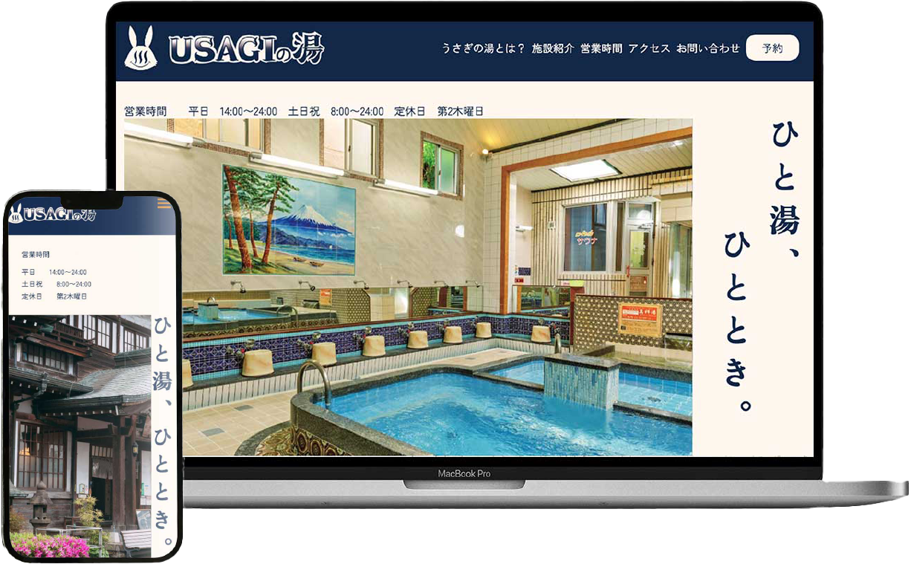
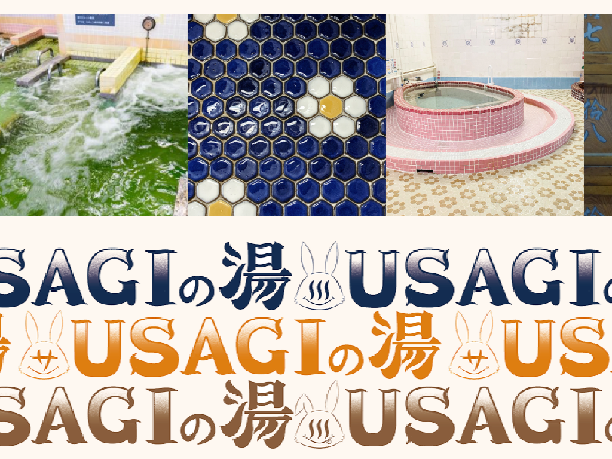

USAGIの湯(架空)
サイトを見る- ターゲット
- 地元の常連客（高齢層）→継続利用を促進
２０〜４０代の若年層→銭湯文化に興味を持ってもらう
遠方からの観光客・サウナ好き→こだわりの湯や施設をアピール
- 制作期間
- ７日間 /
企画書：１日 デザインカンプ：１日（Figma）
ロゴ制作：１日（Illustrator）
コーディング：４日（VScode）
- カラー
- デザイン
- 全体的に落ち着いたカラーで統一し清潔感のある銭湯を表現。 ターゲットは３０代男性、行動パターン内に関連グッズを購入することもあるを設定したため男性でも手に取りやすいイメージでオリジナルキャラクターを作成しました。 サイト内の要所にロゴを取り入れることでキャッチーな印象も出しています。 サイトのトップに営業時間がすぐわかるように配置、ロウリュサウナの予約ページのアクセスボタンも設定しています。
- POINT
- ロウリュサウナの予約ボタンをトップページに配置し常連のお客様も快適に利用できるよう配慮
- 営業時間が一目で分かるようトップページに配置。
またメイン画像は自動スライダーで実装し銭湯の雰囲気を視覚的に見れるようにしています。

- POINT
- キーフレームアニメーションで画像を無限スクロールするように実装、セクションを分ける役割を持たせる工夫をしています。
- POINT
- JavaScriptを使用してUSAGIの湯のオリジナルキャラクターがポップアップ表示されるように実装。
- POINT
- キャンペーンバナーを作成(１０８０×１０８０) SNS投稿をお客様にしてもらうことで継続利用を促進